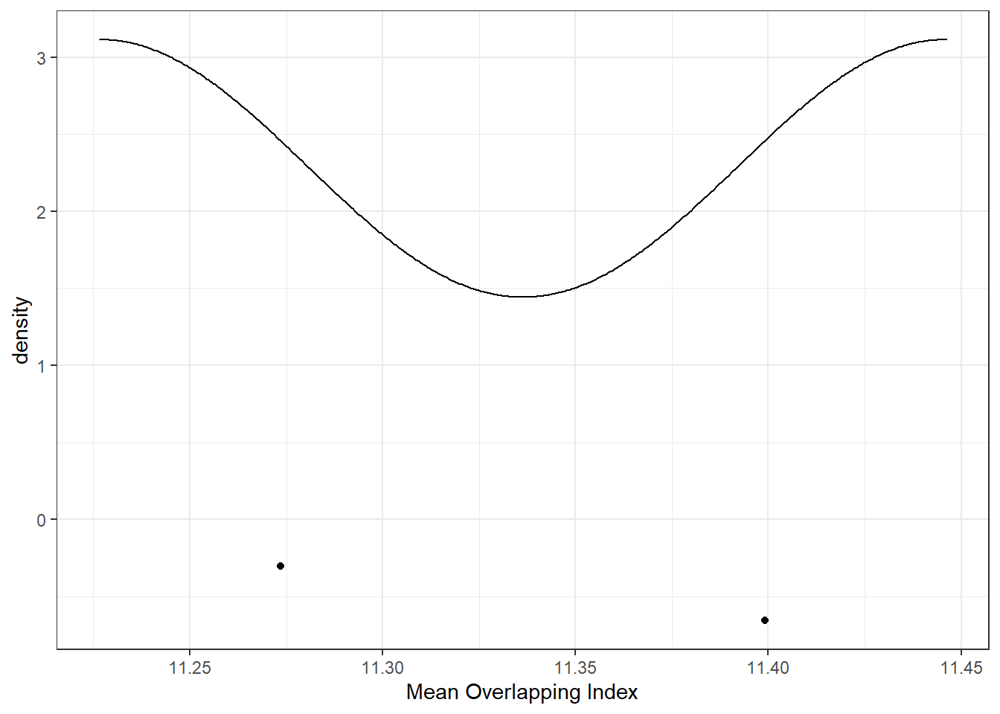
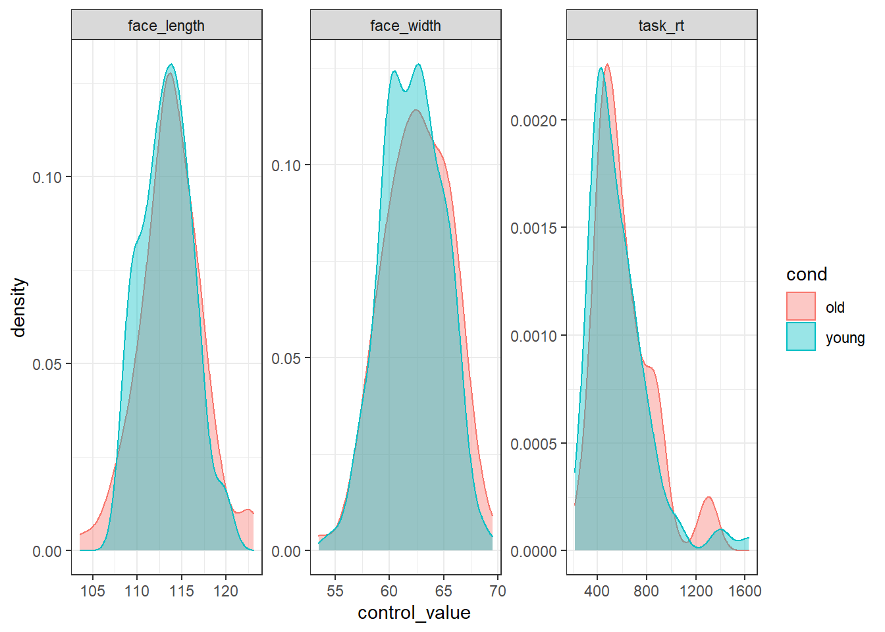
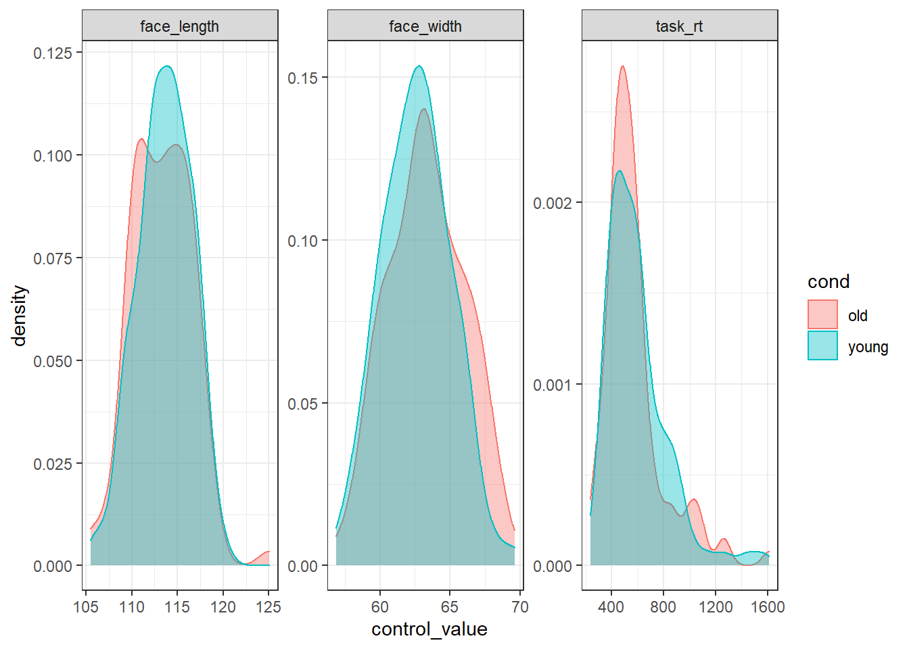

In this example, let’s match on more than one control variable, but also weight the control variables by how important we think it is that they be matched. We’ll use the same design as in 03 - Multiple Control Variables and control for three variables simultaneously: face_width, face_length, and task_rt. This time, however, we’ll weight overlapping index values by the importance of each control variable.
library(tidyverse)
library(overlapping) # contains function for calculating overlap indexstim_pool <- read_csv("stim_pool.csv")As mentioned, we’ll again create a list of 100 young and 100 old faces. We’re matching on face width, face length, and response time on a task (task_rt). Importantly, this time we’re weighting overlap index values by their relative importance.
First, we define our conditions. We’ll use the same conditions as in 01 - Maximising Distributional Overlap.
stim_pool <- mutate(stim_pool, cond = case_when(age<28 ~ "young", age>50 ~ "old"))As before, we’ll create a vector of a large number of random seeds so we can reproduce our stimulus sets. For speed, I’m only running 1000 iterations in this example, but I recommend running much larger numbers of iterations to improve the quality of the match.
set.seed(42) # comment this line out (put # at the start of the line) to get a different result to mine
n_iter <- 2
seeds <- sample(1:.Machine$integer.max, n_iter)We’ll create a vector of the column names for the variables we want to control for. We’ll use this to loop over the control variables.
control_vars <- c("face_width", "face_length", "task_rt")As before, we want to simulate a large number of random samples. Again, we’re recording distributional overlap on three different control variables. To do this, we can just use a nested sapply() loop.
res <- map_df(seeds, function(seed_i) {
# set the seed, so we can recreate any sample later
set.seed(seed_i)
sample <- stim_pool %>%
# only keep observations from conditions we are interested in (remove faces from ages 29 to 49)
filter(cond %in% c("young", "old")) %>%
# for each condition, randomly select 100 items
group_by(cond) %>%
slice_sample(n = 100)
# for each control variable, record the overlap between the two conditions
control_ov <- sapply(control_vars, function(var_i) {
# get the values for this control variable for the young condition
var_i_young <- sample %>%
filter(cond == "young") %>%
pull(!!var_i)
# get the values for this control variable for the old condition
var_i_old <- sample %>%
filter(cond == "old") %>%
pull(!!var_i)
# get the degree of overlap on the control variable between the two samples
ov_results <- overlapping::overlap(list(var_i_young, var_i_old))
# extract the actual value for the degree of overlap
ov_results$OV
})
# return a dataframe with the overlap for the three control variables
tibble(seed = seed_i, control = control_vars, ov = control_ov)
})Now we can calculate the average overlap for each seed. This time, we’re weighting this average differently for each control variable. Let’s imagine we decide that controlling for face width and face length is three times more important than controlling for task response time.
As a first step, I create a table which will let us look up the weight for each control variable. Since we don’t care about scaling the weighted average (the maximum will always be the maximum value), we don’t have to worry about scaling the weights, so we can just use c(3, 3, 1) to reflect that face_width and face_length are three times more important than task_rt.
control_weights <- tibble(
control = c("face_width", "face_length", "task_rt"),
weight = c(20, 20, 1)
)We can now join these weights to our results (using a dplyr join function), calculate the weighted overlap index (ov_weighted), and then calculate the average overlap index on these weighted values.
res_summ <- res %>%
left_join(control_weights, by="control") %>%
mutate(ov_weighted = ov * weight) %>%
group_by(seed) %>%
summarise(mean_ov_weighted = mean(ov_weighted))We can now check the distribution of mean_ov_weighted. Since we didn’t scale our weights, the average is no longer bounded between 0 and 1. However, the best match is still the sample with the highest number.
ggplot(res_summ, aes(mean_ov_weighted)) +
geom_density() +
geom_point(aes(y = -0.5), position = position_jitter(height=0.5)) +
xlab("Mean Overlapping Index")
We can now sort the results by mean weighted overlapping index (descendingly) to order them by how well-matched the conditions are.
res_sorted <- arrange(res_summ, desc(mean_ov_weighted))
res_sorted## # A tibble: 2 x 2
## seed mean_ov_weighted
## <int> <dbl>
## 1 1228985497 11.4
## 2 1781592037 11.2Now we can just extract the best seed as that which has the highest overlapping index.
# sort by distance ascendingly, so the best seed is at the top, and extract it
best_seed <- res_sorted %>%
pull(seed) %>%
first()
best_seed## [1] 1228985497Now we know that 1228985497 is the best seed, we can use that seed to recreate the stimulus set. This code needs to be identical to our simulation code to ensure we recreate the exact same stimulus set.
set.seed(best_seed)
best_stim <- stim_pool %>%
filter(cond %in% c("young", "old")) %>%
group_by(cond) %>%
slice_sample(n = 100)To prove that the stimuli are well-matched, here is what the distribution of each control variable looks like in each condition:
best_stim %>%
pivot_longer(all_of(control_vars), names_to="control", values_to="control_value") %>%
ggplot(aes(control_value, colour=cond, fill=cond)) +
geom_density(alpha=0.4) +
facet_wrap(vars(control), scales="free")
We could use the faces in best_stim for our experiment, and be fairly sure that we’ve controlled for face width.
For comparison, here is what the worst stimulus set looks like:
# sort ascendingly (smallest overlap first), and extract the top seed
worst_seed <- res_sorted %>%
arrange(mean_ov_weighted) %>%
pull(seed) %>%
first()
set.seed(worst_seed)
# recreate the worst stimulus set
worst_stim <- stim_pool %>%
filter(cond %in% c("young", "old")) %>%
group_by(cond) %>%
slice_sample(n = 100)
worst_stim %>%
pivot_longer(control_vars, names_to="control", values_to="control_value") %>%
ggplot(aes(control_value, colour=cond, fill=cond)) +
geom_density(alpha=0.4) +
facet_wrap(vars(control), scales="free")